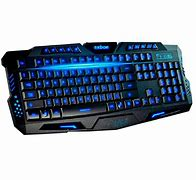

R$ 200
Com as teclas multimídia HAVIT KB857L FN, você pode navegar rapidamente pela reprodução de música, controle de volume ou navegador da Internet, o que economiza tempo. Facilidade de ajustar o brilho e os estilos de luz de fundo O teclado para jogos HAVIT KB857L permite ajustar os estilos de retroiluminação de acordo com seus gostos. Design de Tecla Suspensa Digitar no teclado para jogos HAVIT KB857L parece limpo e rápido, trazendo eficiência e experiência de jogo precisa. Suporta anti-ghosting de todas as teclas Você pode bloquear a tecla de bloqueio de janela: FN + WIN para bloquear a tecla de vitória a fim de evitar sair do jogo por engano!